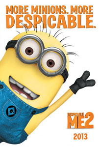

Review Despicable Me 2
Minggu, 1 Desember 2013

Well… sebagai sebuah karya perdana, Despicable Me (2010) jelas bukanlah sebuah karya yang buruk. Meskipun dengan naskah cerita yang jelas jauh dari kecerdasan film-film animasi karya Pixar Animation Studios, termasuk sekuel dari film-film animasi yang mereka produksi, film yang diproduksi oleh Illumination Entertainment ini masih mampu tampil menghibur dengan deretan pengisi suara yang berhasil menghidupkan setiap karakter yang ada di dalam jalan cerita, pemanfaatan efek visual yang maksimal dan… kehadiran karakter pendukung bernama minions yang secara mengejutkan mampu mencuri perhatian begitu banyak penonton dunia. Dengan formula tersebut, Despicable Me yang dibuat dengan biaya produksi sebesar hanya US$69 juta berhasil mengumpulkan total pendapatan sebesar lebih dari US$543 juta dari masa perilisannya di seluruh dunia. Atau dalam bahasa lain di Hollywood… sekuel!
Masih mengandalkan naskah cerita yang ditulis oleh duo Cinco Paul dan Ken Daurio serta pengarahan dari Pierre Coffin dan Chris Renaud, Despicable Me 2 sayangnya tetap tidak akan menghadirkan kualitas penceritaan yang lebih baik jika dibandingkan dengan seri pendahulunya. Paul dan Daurio sepertinya telah menyadari bahwa naskah cerita mereka yang terdahulu menyimpan daya tarik yang begitu minimalis terhadap sang karakter utama, Gru yang merupakan sosok penjahat yang kemudian mengubah jalan hidupnya menjadi lebih baik setelah perkenalannya dengan tiga sosok gadis kecil. Namun, daripada berusaha untuk memberikan Gru alur cerita yang lebih kuat lagi, Paul dan Daurio justru berpaling pada kumpulan minions untuk mengisi setiap sudut jalan penceritaan Despicable Me 2. Hasilnya, ibarat sekumpulan cheerleaders cantik yang terus menari di sepanjang sebuah pertandingan bola basket yang begitu membosankan, kumpulan minions tersebut dimanfaatkan Paul dan Daurio secara maksimal untuk mengalihkan perhatian penonton dari alur cerita utama Despicable Me 2 yang sejujurnya patut dipertanyakan keberadaannya.
Jalan cerita Despicable Me 2 sendiri dimulai ketika Gru (Steve Carrell) diculik oleh salah seorang agen The Anti-Villain League, Lucy Wilde (Kristen Wiig). Penculikan tersebut sama sekali tidak bertujuan buruk bagi Gru. Lucy justru membawa Gru ke markas besar The Anti-Villain League untuk menemui pemimpin mereka, Silas Ramsbottom (Steve Coogan), yang kemudian meminta bantuan Gru untuk menemukan seorang penjahat yang telah mencuri sebuah laboratorium penelitian yang berisikan sebuah formula kimia yang jika disalahgunakan akan mampu mengubah makhluk hidup menjadi sosok yang mematikan. Walau pada awalnya menolak tawaran tersebut, dengan beralasan bahwa ia lebih memilih untuk berkonsentarasi menjadi ayah yang baik bagi ketiga puterinya, Margo (Miranda Cosgrove), Edith (Dana Gaier) dan Agnes (Elsie Fisher), Gru kemudian menyanggupi untuk memenuhi tugas tersebut.
Walau memiliki jalan penceritaan yang menjanjikan akan kehadiran deretan adegan aksi yang terjadi selama karakter Gru melaksanakan tugasnya dalam menyelamatkan dunia, namun Despicable Me 2 justru begitu jauh dari kesan tersebut. Dalam perjalanannya, alur cerita mengenai karakter Gru dan Lucy Wilde yang mencari jejak sang karakter antagonis kemudian terpecah menjadi begitu banyak bagian: kisah mengenai hubungan personal antara karakter Gru dan Lucy Wilde yang kemudian berkembang, hubungan Gru dan ketiga puterinya, kisah asmara pertama antara karakter Margo dengan Antonio yang kemudian membuat Gru menjadi was-was, beberapa plot cerita yang dibangun berdasarkan sudut pandang beberapa karakter pendukung lain hingga kisah mengenai pencarian jodoh yang tepat bagi Gru yang entah bagaimana bisa diselipkan dalam berbagai deretan plot cerita yang sebelumnya telah dihadirkanDespicable Me 2. Secara sederhana, alur penceritaan Despicable Me 2 adalah begitu tidak beraturan.
Yang menjadi kunci penyatu dari seluruh plot penceritaan yang saling tidak berkesinambungan tersebut adalah kehadiran kumpulan minions di setiap adegan film ini. Harus diakui, kumpulan minions yang dihadiirkan dalam seriDespicable Me memiliki daya tarik yang begitu kuat. Siapapun dipastikan tidak akan sanggup untuk menahan senyum mereka ketika kumpulan makhluk berwarna kuning tersebut telah melakukan aksi-aksi bodoh mereka di depan layar bioskop. Namun, Despicable Me 2 memanfaatkan daya tarik para minions sehingga seringkali mengenyampingkan jalan cerita utama yang sedang berjalan. Akibatnya, tidak hanya banyak plot penceritaan Despicable Me 2 yang gagal untuk dikembangkan dengan baik, kumpulan minions yang awalnya tampak begitu menarik dan lucu tersebut akhirnya justru menjadi melelahkan keberadaannya – dan Illumination Entertainment bahkan telah menyiapkan sebuah spin-off dari seri Despicable Me berjudul The Minions yang jelas akan berisi para minions tersebut secara maksimal. Despicable Me 2jelas terasa berantakan akibat naskah cerita arahan Cinco Paul dan Ken Daurio yang terlalu mengandalkan asumsi bahwa penonton akan tetap merasa terhibur dengan kehadiran minions dalam jumlah yang lebih besar.
Dengan karakter-karakter yang gagal untuk tergali dengan baik, wajar jika performa para jajaran pengisi suaraDespicable Me 2 juga tidak pernah terasa tampil maksimal maupun istimewa. Steve Carrell dan Kristen Wiig setidaknya masih mampu menghidupkan karakter mereka dengan baik. Begitu juga dengan Miranda Cosgrove, Elsie Fisher, Benjamin Bratt serta Ken Jeong yang mampu mencuri perhatian. Peningkatan kualitas yang cukup dapat dirasakan hadir dari penampilan visual film ini, dengan penggunaan teknologi 3D di beberapa adegan terasa begitu hidup. Tata musik arahan Pharrell Williams dan Heitor Pereira juga cukup mampu membawakan atmosfer menyenangkan pada alur penceritaan Despicable Me 2.
Apakah Despicable Me 2 berkualitas buruk? Tergantung bagaimana Anda melihatnya. Sebagian dari penonton jelas akan merasa terhibur dengan berbagai kegilaan dan kebodohan yang dihadirkan para minions di sepanjang penceritaan film ini. Namun, berbagai atraksi hiburan yang tersaji tersebut jelas tidak akan dapat melepaskan fakta bahwaDespicable Me 2 tersusun atas konstruksi dasar cerita arahan Cinco Paul dan Ken Daurio yang begitu lemah dan sama sekali tidak mampu dikembangkan dengan baik oleh duo sutradara Pierre Coffin dan Chris Renaud. Despicable Me 2jelas lebih sering terasa sebagai sebuah film yang diperuntukkan bagi para penggemar minions daripada mereka yang ingin mengetahui kelanjutan kisah karakter Gru yang telah dipaparkan pada seri sebelumnya. Menghibur, namun jelas terasa terlalu dangkal untuk mampu meraih penonton dalam jangkauan yang lebih luas.